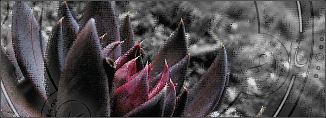
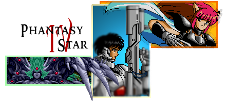
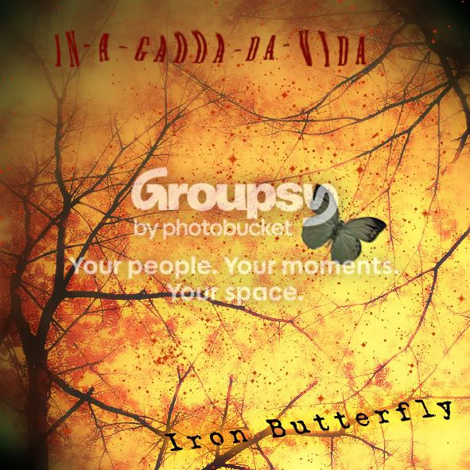
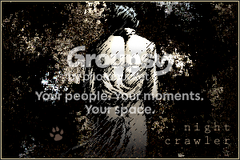
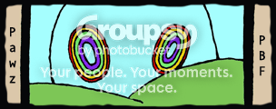

#17589 1 2007-10-18T12:15:58Z southpaw My new image topic! I'm excited about this one. I realized with my last image topic that I cluttered it with bad sigs and stuff, so here I go, starting off fresh. The first few sigs in this post are my favorites of the sigs I have made.
for condog for winning Season 1 of SOTW:
fractalp:
nevermore:
skyline:

xdude:
southpaw (when I was still 321southpaw):
and some free sigs, since I don't think anybody I know of is using them:

Comments on them? I'm always glad to hear what you have to say.
#372805 2 2007-10-18T12:25:50Z Commander wow those are cool, the first is my favorite
edit~ i saw some cool brushes in there, how do you install them
#372806 3 2007-10-18T12:30:16Z AMomentLikeThis I've sooo called you southpawPOWPOW before. The Skyline one is my favourite.
#372810 4 2007-10-18T12:51:04Z Ignate Those are awesome. The Nevermore one is my favourite.
#372845 5 2007-10-18T18:31:44Z catspride Nice images. fractalp's sig is the best, imo.
#372858 6 2007-10-18T20:08:15Z 3v!1 Yea, nevermore's and the two free ones are very good.
#372880 7 2007-10-18T22:19:19Z pajammin Whoa, nice stuff!
I would use the black rose one, but I'm too attached to my current siggy.
My favorite of them all, though, is the one for xdude.
#372891 8 2007-10-18T23:18:20Z southpaw Thank you for all the feedback. I just had this idea when I was on IRC about having a borderless sig. I know it has probably been done before, but I like the simplicity of the borderless sig, and it's different then a pop-out sig.
anyway, the first attempt at this is my current signature. Comments and/or criticism?
#372893 9 2007-10-18T23:37:28Z T3chno I like your currenty sig, kindy blurry though.
fractalp's is the best.
Good job on all the sigs. =)
#372975 10 2007-10-19T08:10:48Z Question¿Mark I personally like the borderless one the best, though the others are fantastic.
#375819 11 2007-10-31T22:04:26Z spoon Beautiful. Absolutely beautiful.
EDIT: Sorry, didn't check the date on the posts.
#379651 12 2007-11-15T08:41:48Z southpaw A new borderless sig, because I just can't get enough of this idea...
I think it's pretty cool. comments? Criticism?
#379687 13 2007-11-15T14:18:47Z mrgy05 They're all pretty good, but when I seen a brush set on different peices of work it drives me nuts.
#379709 14 2007-11-15T16:40:24Z DemonzLunchBreak Make me a beautiforous sig!
#379841 15 2007-11-16T04:16:19Z Frogs The one you made for nevermore is the shit.
#379904 16 2007-11-16T11:22:30Z Condog The one you made for nevermore is the shit.
as if it is! How about you critisize it WHEN YOU GET A SIG.
#379931 17 2007-11-16T16:39:11Z southpaw The one you made for nevermore is the shit.
as if it is! How about you critisize it WHEN YOU GET A SIG.
I think he meant "the sh!t" as in "the most awesome from the ones that are up there."
#379934 18 2007-11-16T16:43:00Z Chase Guys, not backseat modding or anything...but you'll probably get warned for swearing outside of BnT...
-----
Nice stuff though.
#380072 19 2007-11-17T05:34:44Z astro I would hope that no-one would get warned for just saying something like that--and yes, he was definitely meaning it as a complement.
#380324 20 2007-11-17T22:30:33Z southpaw okay, so at first I didn't like this sig.
Then I looked at it again and thought it was, as Demonz put it, sexy.

comments?
#380340 21 2007-11-17T23:14:52Z fingersonthefrets okay, so at first I didn't like this sig.
Then I looked at it again and thought it was, as Demonz put it, sexy.
comments?
mmm it is sexy but there are a few things i can quite pin point i dont like about it
#380552 22 2007-11-18T15:05:59Z Ignate The bar with the name on it feels empty, and I don't really like the city.
But really, it's very nice and stylish.
#380878 23 2007-11-19T14:47:55Z Cossack these sigs are all cool. i tried making a sig and it failed miserably so now im left with this basic thing

and yeah - the demonz one seems a little empty but its cool (less is more

). i wish i could make sigs *sigh*

#386472 24 2007-12-05T04:31:00Z southpaw I love this one.
Thanks to remote/limer for letting me use his image for this. I think it turned out pretty nicely. And I know, the E's are hard to read but I liked the font overall so I just went with it.
comments, criticism, critique?
#386550 25 2007-12-05T07:36:09Z Wizard Actually, all your sigs are cool.
Can you make one for me?
#386584 26 2007-12-05T12:21:28Z Condog Very nice.
#386643 27 2007-12-05T20:00:36Z Commander yeah, could I have one also?? mine are starting to annoy me.
#386958 28 2007-12-06T23:25:54Z Octopod Squad Could you please make me one? Something that doesnt have to do with octopuses?
And something better for my avatar, and a smaller siggy
#387070 29 2007-12-07T05:17:25Z southpaw Wizard: working on one.
darn_hippie: working on one, found you a great image of a hippie to include. I think you'll like the overall outcome of it.
Octopod Squad: I'll definitely make on for you. Let me make those other two and I'll get to your ASAP.
I will probably get Wizard's or hippie's done tonight, which will be good.
#387133 30 2007-12-07T12:44:56Z Commander hehe pleaseandthankyou
#387451 31 2007-12-08T18:40:31Z southpaw here's darn_hippie's sig. I made it while I was deadly tired and thought it didn't turn out so great. But now I'm awake and I like it a little better.

Comments, Criticism, Critique?
#387489 32 2007-12-08T20:46:55Z southpaw I wish I had made this for myself...

Comments, Criticism, Critique?
#387675 33 2007-12-09T10:09:22Z Wizard Its awesome!
Thanks for the sig!!
#387893 34 2007-12-10T03:03:19Z fingersonthefrets I wish I had made this for myself...
Comments, Criticism, Critique?
i very much like that one

#388021 35 2007-12-10T10:15:41Z Ignate That's a funky new sig you have there, southpaw. Quite nice.
#388030 36 2007-12-10T11:54:59Z southpaw That's a funky new sig you have there, southpaw. Quite nice.
hehe, thanks. incluye made it for me. I like it a lot too.
btw, I'll get to your sig after Octopod Squad's.
#388032 37 2007-12-10T12:45:45Z southpaw haha, I love this thing to death:
Comments, Criticism, Critique?
#388255 38 2007-12-11T05:27:43Z Ignate Sleek. The 's' looks like a 'b' though.
#388297 39 2007-12-11T09:08:43Z Hendor Sleek. The 's' looks like a 'b' though.
Yeah. It looks like the top of it has been chopped off.
#388310 40 2007-12-11T10:26:23Z southpaw Ignate and Hendor:
That's just the font. I liked how it made the "octopod" part, didn't really want to ruin the second part with a font that didn't go well.
#388429 41 2007-12-11T22:24:05Z Commander btw what /is/ the font? I loves me that font
#391881 42 2007-12-21T10:46:54Z southpaw I love this thing.
Ignate requested a "dream-like" scenario with floating ships, such as the Chinese junk ships shown here.
comments, criticism, critique?
#392098 43 2007-12-21T23:45:50Z southpaw the ugliest thing I've ever made:
comments, CRITICISM, CRITIQUE?
#394382 44 2007-12-29T09:23:05Z Octopod Squad Sweet sig you made for me!
Anyway, I would love for you to try to change it into a machine-type-theme. (DONT NEED TO)
If you could it would be AWESOME
If you cant then thats all right too.
#395413 45 2008-01-01T19:18:26Z southpaw 
my latest. It's just a banner, nothing special, but it's for the new SOTW that me and >stardeash are doing soon. very soon. Just thought I'd post it here just because.
#396562 46 2008-01-04T11:26:47Z southpaw Alright, if anything, I want feedback on this because I think it's simply awesome and I want to hear what you guys have to say about it, regardless if you hate it.
I was talking with Frets and I wanted to make a sig without using brushes, only gradients, fills, selections, shapes, whatever...
Then Frets asked if using a brush for the eraser was okay, and I said yes, so it's kinda cheating, but still... I didn't technically layer a brush, rather I deleted the shape of a brush from a layer.
comments, criticism, critique?
#396564 47 2008-01-04T11:41:22Z Condog Aw man, that is awesome! I like the look of it, especially the name. I do think it is cheating using the brush eraser. Also, if that is the sig you are using for the SOTW, are you allowed to post it elsewhere? I know your not allowed to post in the thread, but are you allowed to discuss the sig and get opinions before you submit it?
Again, great job.
#396593 48 2008-01-04T14:43:04Z Commander I lost
D:
#398755 49 2008-01-08T08:05:46Z southpaw My new sig...
I know it's not very great, but I thought the "magnifying glass" idea was kinda cool.
Comments, Criticism, Critique?
(photobucket was being stupid and doing routine maintenance, so I had to upload it here.)
EDIT: removed attachment. It wasn't so great. Thanks to Harley for fixing this up a little bit for me.
#398783 50 2008-01-08T11:55:20Z The New Harley cool stuff here, and your totally welcome dude, anytime!
#398786 51 2008-01-08T11:57:39Z Condog That is totally bitchin'. Great job.
#399342 52 2008-01-10T04:39:08Z southpaw hmmm... I'm not quite so sure about this one. I'm submitting this to the SOTW but I don't know if it needs more work first or not.

Comments, Criticism, Critique?
#399360 53 2008-01-10T05:47:53Z >stardeash In my opinion, it looks a little crammed.
#399361 54 2008-01-10T05:53:02Z fingersonthefrets hmmm... I'm not quite so sure about this one. I'm submitting this to the SOTW but I don't know if it needs more work first or not.
Comments, Criticism, Critique?
ew..
#399366 55 2008-01-10T06:52:15Z southpaw ;_;
[sarcasm]YOU TWO JUST DON"T KNOW GREATNESS WHEN YOU SEE IT!!![/sarcasm]
Thanks, I needed that. Now it's time to work on something that actually looks good...
#399368 56 2008-01-10T06:55:32Z >stardeash It looked terrible, i just didn't want to straight up say that because i have some respect for things. I don't really think that anything fit together to well in it and the colors were kind of bad. I don't think I'm doing very well with the new SOTW theme
#399369 57 2008-01-10T06:59:39Z southpaw It looked terrible, i just didn't want to straight up say that because i have some respect for things. I don't really think that anything fit together to well in it and the colors were kind of bad. I don't think I'm doing very well with the new SOTW theme
oh, no, by all means, if my work sucks please let me know. I don't want to be tip-toed around. I realize how bad it looked, I just wanted someone else's opinion. I'm going to be working on something else very soon, I'll post it once it's finished.
#401041 58 2008-01-15T10:49:33Z southpaw
something I've been working on for a little while that finally came together tonight. It might possibly be for TB007, if he likes it.
Comments, Criticism, Critique?
#401088 59 2008-01-15T21:22:08Z The New Harley erm.................
last time you chucked up, what colours were in it?
#401174 60 2008-01-16T02:53:54Z southpaw erm.................
last time you chucked up, what colours were in it?
mmm, it was all yellow due to it mostly being phlegm. Thanks for asking, I didn't know anybody in the Images forum wanted to know that
#401373 61 2008-01-17T00:38:40Z >stardeash I like the picture. It looks good. I wouldn't like something like that for myself but i think it would fit some people's styles on the forums.
#401401 62 2008-01-17T01:13:55Z southpaw brand new! I discovered a couple things in Photoshop today and decided to mess around with them. I like it, and I think it qualifies as "duotone," so I might possibly submit it to the SOTW this week.

Comments, Criticism, Critique?
#401414 63 2008-01-17T01:42:49Z Condog That looks cool, but it needs either a border or it needs to fade out. Other than that its really cool.
#401415 64 2008-01-17T01:43:56Z >stardeash Sh*t, nice. I like that one a lot

#403057 65 2008-01-22T05:36:42Z southpaw wow, I'm surprised I waited so long to post this. Probably because a lot of you already saw it in IRC, but no worries. Here it is again:

Anyway, I love this thing a lot. Took a couple days and is part of a larger image I've been working on that I might post here later if I manage to finish doing what I want to do to it.
Comments, Criticism, Critique?
#407656 66 2008-02-07T06:46:50Z southpaw my sig for SOTW
it's not great, but I like Calvin and Hobbes so yeah.
#407663 67 2008-02-07T07:54:42Z Condog 
Nice one
#407665 68 2008-02-07T08:30:04Z Wizard Cool. Maybe you could add some colour.
#408933 69 2008-02-12T15:57:02Z southpaw Sig of the Week - Week 7

BAM! *headshot*
Comments, Criticism, Critique?
#413545 70 2008-03-03T18:45:00Z southpaw A brand new wallpaper (1280x1024) that I spent a little while on.
I hope you all like it as much as I do.
Art Is Life
Comments, Criticism, Critique?
#413857 71 2008-03-04T19:10:53Z eternal_moonlight A brand new wallpaper (1280x1024) that I spent a little while on.
I hope you all like it as much as I do.
Art Is Life
Comments, Criticism, Critique?
Thats great.
Hey, you mind making me a sig? Just a cool design and instead of "eternal_moonlight" put "Adam" on it.
#413929 72 2008-03-04T22:47:35Z southpaw Here is Eternal_Midnight's sig. I like the feeling that it could almost be a real picture... at least that's what it feels like to me:
I like it
#413934 73 2008-03-04T22:57:10Z eternal_moonlight Thanks so much. Im already wearin it!
#414580 74 2008-03-07T03:20:39Z Ignate I especially like eternal_midnight's sig. I like the tiny signature paw on the moon.
#414655 75 2008-03-07T09:20:36Z fingersonthefrets the paw grew on me
#414658 76 2008-03-07T10:46:24Z Condog Aw man, that is cool. I love the little paw you used. I need a trademark symbol as well...

#414679 77 2008-03-07T12:47:45Z Mae Hey, southpaw. Can you make me a sig? Something that goes with my avatar. Thanks.
Edit: If you want the full image...
click here. 
#414716 78 2008-03-07T16:27:47Z kkstrong0 whatever happened to teh sig you were making me?
#414717 79 2008-03-07T16:37:47Z southpaw whatever happened to teh sig you were making me?
hmm...
*looks in image folder*
bah, now I remember!
Okay, first of all thank you all for the recent comments. It has been a while since I've gotten feedback like that on anything.
Next off, I am going to write out an agenda for what I have volunteered to do over the next week:
- Finish the banner and the sigtags for Excel: Design & Conquer
- Complete Mae's sig
- Complete kkstrong's sig and avvy (yes, I remember you wanted something about Avatar: The Last Airbender)
- Possibly make 20+ sigtags for the Caption Contest
- Wonder about how to tackle or even complete kai's sig request.
So there's my list. Mae, I should be able to get something done for you on Sunday night. kkstrong, sorry about the wait, I need to start over, so I could possibly get that sig to you on Sunday night as well. Possibly Monday night though. If I don't get it to you by Tuesday night, bother me with a PM, okay? That'll make me get back to it.
Kai, I think you're going to be waiting for a much longer time period. I'm sorry, but it's just the nature of the beast.
-southpaw-
#414730 80 2008-03-07T17:16:40Z Mae 
Thanks.
#415339 81 2008-03-09T18:45:09Z southpaw Mae's sig... I like the simplicity of it.

Comments, Criticism, Critique?
EDIT: bahaha, I forgot that it was supposed to be something that went with Mae's avatar... oh well. If Mae doesn't want this then somebody else can have it.
EDITx2: here's the one that would go with Mae's avvy. I like this one a lot too.

#415453 82 2008-03-09T23:54:52Z Condog 
omg that first one is
awesome! I saw mae had it as his sig, and i thought he was a fantastic sig maker. Then i saw "sig by southpaw", and everything was explained.
#415454 83 2008-03-09T23:58:48Z T3chno Both sigs are awesome. I like the second one more though.
#415514 84 2008-03-10T03:46:49Z Ignate omg that first one is awesome! I saw mae had it as his sig, and i thought he was a fantastic sig maker. Then i saw "sig by southpaw", and everything was explained.
You doubt the power of southpaw, Condog.
I like both of them, the first one is just so...
VIBRANT.
#415580 85 2008-03-10T15:25:34Z Mae omg that first one is awesome! I saw mae had it as his sig, and i thought he was a fantastic sig maker. Then i saw "sig by southpaw", and everything was explained.
I like both of them, the first one is just so... VIBRANT.
QFE. That's why I chose it. I was going to go for the second one since it was my original request but I slighty prefered the first one. Both were great.
#415584 86 2008-03-10T16:09:06Z 29403 You wouldn't mind making me a sig of tails? Small and Simple, if you do make it.
Merci!
http://upload.wikimedia.org/wikipedia/en/1...ils_classic.jpg#416537 87 2008-03-13T16:21:07Z Ignate Actually, I would like a sig as well.
Something to match my grey and green link-bar, but not too much, I want it to stand out. It has to be 420 pixels wide, borderless or not, I don't mind.
As always, it's time for the obligatory "I can wait."
I can wait.
#416541 88 2008-03-13T16:52:06Z southpaw okay, so now I have a new list:
- Complete kkstrong's sigatar request
- Complete my share of Exubie's sigtags
- Complete 29403's sig request
- Complete Ignate's sig request
- Find a way to fit these all around the N magazine.
So there's my new list. kkstrong, I'll try and get yours done as soon as possible, but with good quality and stuff. I still have that avatar that I made for you a while back if you still want that. I can probably incorporate the scene when Aang and Fire Lord Ozai are fighting too, so that could be cool.
@everybody: Thank you for all the recent comments. They are much appreciated
#416757 89 2008-03-14T10:03:51Z Weisslenny0 #416878 90 2008-03-14T21:49:41Z Be_Happy_:) Could you make me one for me plz
#418424 91 2008-03-18T17:21:46Z incluye Amazing. Credible(in). Wow.
What's the one you've got right now? Is that an older one?
#418719 92 2008-03-19T08:11:02Z NCrafter Wow your stuff is great
Just a bit of critique on your current one though: Maybe make it a bit more saturated. It seems kinda flat.
Other than that I'd say your current one is my favorite so far =^.^=
#418746 93 2008-03-19T12:14:04Z southpaw best damn sig I think I've made...

of course I'm really tired and my judgement might be off, but whatever.
Comments, Criticism, Critique? I'd really love to hear what anybody has to say about this sig, good or bad.
#418757 94 2008-03-19T13:02:19Z Wizard Wow. Really cool.
The font colour for 'kkstrong' could use some contrast though.
#418950 95 2008-03-20T01:36:03Z Be_Happy_:) i dont know who is beter you or condog

#418956 96 2008-03-20T01:45:57Z T3chno best damn sig I think I've made...
of course I'm really tired and my judgement might be off, but whatever.
Comments, Criticism, Critique? I'd really love to hear what anybody has to say about this sig, good or bad.
It's definitely not your best. It's too large. While the lighting is great, colors are rather boring.
It's okay.
#419102 97 2008-03-20T13:03:51Z incluye I agree with T3chno about the lighting, although the colors are great. I think it could have used a little more...something, contrast, I think, or a little more vivid color.
#419114 98 2008-03-20T13:35:18Z Mae best damn sig I think I've made...
of course I'm really tired and my judgement might be off, but whatever.
Comments, Criticism, Critique? I'd really love to hear what anybody has to say about this sig, good or bad.
Okay, so your judgement might have been a bit off, but it's still a wicked sig. I disagree, though, that the colours are boring and that the "kkstrong" needs contrast. Thumbs up.
#419118 99 2008-03-20T13:47:36Z squibbles It's good, but it's not your best...i don't really like the splotches.
#419145 100 2008-03-20T15:03:18Z Ignate I don't really think this is your best. Basically what the others said earlier.
#419668 101 2008-03-21T16:20:43Z eternal_moonlight What Ignate said.
#424507 102 2008-04-02T18:46:37Z southpaw 
So, I'm not superbly into parkour but I really like the idea of interacting with urban environments and such, so that is why I chose this. Plus I believe that people should challenge themselves every day so that they can better themselves.
This is my entry for Portfolio. What's important and personal to me is being able to constantly push your boundaries in one way or another.
#424576 103 2008-04-02T23:21:14Z fingersonthefrets
So, I'm not superbly into parkour but I really like the idea of interacting with urban environments and such, so that is why I chose this. Plus I believe that people should challenge themselves every day so that they can better themselves.
This is my entry for Portfolio. What's important and personal to me is being able to constantly push your boundaries in one way or another.
it's nice, but you should of left the paw out of it, i know it's your logo or whatever and all, but it really would look a lot better without it.
#424626 104 2008-04-03T01:04:52Z southpaw it's nice, but you should of left the paw out of it, i know it's your logo or whatever and all, but it really would look a lot better without it.
it's not even my logo but a stock shape from the default shapes in Photoshop.
#424678 105 2008-04-03T05:17:20Z NCrafter Weren't you the one who used Fireworks?
Oh well, doesn't matter.
Keep up the good work!
#424679 106 2008-04-03T05:19:40Z southpaw I be using le Photoshop CS2. Condog is the one who be using the Fireworks thingymabobber.
Either way, thank you!
#424680 107 2008-04-03T05:22:32Z squibbles it's very nice, but i have one thing to say about trez's portfolio entry...be afraid...be very afraid.
#424705 108 2008-04-03T09:08:16Z Trezoid Cause I am that scary
on your portfolio entry, the text draws too much attention away from the main focal (the parkour dude) and he is too dark/off center...
but i know that stock
#424713 109 2008-04-03T10:03:49Z Mae The image is awesome, but I don't like the text.
#426955 110 2008-04-11T00:21:15Z southpaw for ToeFaceKiller, because he's an awesome copycat

#427155 111 2008-04-11T17:05:47Z Ignate You are an awesome guy, southpaw. Very nice sig.
Although I'm not sure if the sigpaw might look better at the left corner, but I'm sure you'd prefer making it part of the picture.
#427164 112 2008-04-11T17:21:18Z southpaw It was a tossup between the left and right eye actually. I realized it's a lot less noticable in the left eye (or right depending on how you look at it) and decided to put it there. Plus it gives him a little eyeball thing
thanks for the comment
#427177 113 2008-04-11T17:52:38Z T3chno That sig is quite awesome.
#427461 114 2008-04-12T14:59:45Z eternal_moonlight Wow. Very nice sig.
#427473 115 2008-04-12T15:34:18Z Ravenclaw for ToeFaceKiller, because he's an awesome copycat
I love that sig, it's awesome. The way part of it is slighty crooked makes it look so realistic. Next time I need a sig, I'll ask you.
#427476 116 2008-04-12T15:39:45Z Why Me Nice. That looks awesome. If you don't mind, could you make me a sig? I suck at making art on the computer. And as Ignate said:
I can wait
#428707 117 2008-04-15T18:52:35Z southpaw 
What was going to be my image for Portfolio for Week 2 ended up being more than 8 hours late. Bah, I can't really bend the rules for myself just because I'm the guy that is coming up with the themes. Anyway, feedback appreciated.
#443241 118 2008-06-09T13:55:23Z incluye It's a little...weird. To be honest, the butterfly is rather blurry and the font doesn't agree with me, but the background is cool.
#443242 119 2008-06-09T14:02:33Z eternal_moonlight It's kinda hard to see the font on the top. And the butterfly is a little blurry. 6.5/10
#443287 120 2008-06-09T18:18:32Z southpaw o_O incluye, you picked this thread from the depths of the forum.
Thanks guys, that image is quite old, but your comments and critique are still welcome.
e_m: I purposefully blurred the butterfly because it looked pretty shitty if I didn't blur it... I thought it worked kinda.
And yeah, the text is the weirdest thing of all... but y'know, it was a psychedelic rock album, so I tried warping the text to fit the time era... should have stroked it a couple times with different colors... ah well.
#444403 121 2008-06-14T07:00:36Z southpaw new images

+
+
+
+
+
---
latest sigs. Most of you have probably seen the bulk of these, but this last one is for Animator and I love it to death.
Comments, Criticism, Critique?
#444408 122 2008-06-14T08:13:43Z 29403 they're awesome.
Have you started my sig yet? It's already been a quarter of a year. I don't want tails anymore, perhaps the koopalings?
#445029 123 2008-06-15T20:04:20Z eternal_moonlight 1. Great 8.5/10
2. What is it? Alright 6.5/10
3. Sweet 8/10
4. Meh? Creative? 6/10
5. Pretty nice 7/10
6. Love it. 9/10
7. Love it more. 9.5/10
#445039 124 2008-06-15T20:24:13Z southpaw more imaging mayhem... well, just making sigs for people, that's all.
Here's the second sig for Animator, followed by Communist's sig and a sig I've just design for Fingersonthefrets...
+

+
Comments, Criticism, *Critique*?
#445059 125 2008-06-15T21:30:10Z incluye I love fotf's, and I like the sickle design integrated into "Communist". The Animator sig is a tad pixely, and the Communist one is rather faint, but they're all very good.
#445300 126 2008-06-16T17:33:30Z 29403 I'd better remind you as you've probably completely forgotten about my request.
Can I have a small sig on lemmy koopa using the first image on
http://www.koopatorivm.com/content/view/26/59/
Thanks.
#445313 127 2008-06-16T18:00:19Z Heartattack These are great. I'd request a sig but I'm happy with the one I have now.
#445329 128 2008-06-16T18:39:37Z Mae Animator --- Love how the mushroom dude blends in with the galaxial phenomena. (if that's what it is) 8/10
Communist --- The colors and text are perfect. The image does nothing for me though. 6/10
Fotf --- Space monkey! The blur was effective with the complementary colors. 9/10
#445348 129 2008-06-16T20:06:36Z incluye These are great. I'd request a sig but I'm happy with the one I have now.
Loyalty!
#445350 130 2008-06-16T20:14:15Z Heartattack These are great. I'd request a sig but I'm happy with the one I have now.
Loyalty!
Long live the Incluye!!!
#445379 131 2008-06-16T21:06:42Z Be_Happy_:) I love the fotf siggy. Nice siggys seriously.
#445562 132 2008-06-17T07:28:57Z southpaw here's my latest and greatest wallpaper!
#445624 133 2008-06-17T15:40:48Z incluye To coin a phrase:

It's quite weird. What size is it?
#445628 134 2008-06-17T15:59:21Z Izzy To coin a phrase:
It's quite weird. What size is it?
Just what I was thinking.
I love you sigs Southpaw.

I should get to requesting one someday.
#445657 135 2008-06-17T17:45:09Z Heartattack 1-up in the cosmos!
#446243 136 2008-06-19T03:43:09Z southpaw To coin a phrase:
It's quite weird. What size is it?
That's what /she/ said!
1024x768
#446361 137 2008-06-19T15:04:28Z eternal_moonlight 1-up in the cosmos!
Lol. Nice.
It's alright, a bit odd.
#446791 138 2008-06-20T15:33:07Z Guy_Zap *Points at self, then you, then siggy, then miming throwing siggy out of window, then mimes recieving a sig from southy*
I just can't request normally
#446922 139 2008-06-21T00:47:31Z southpaw *Points at self, then you, then siggy, then miming throwing siggy out of window, then mimes recieving a sig from southy*
I just can't request normally
well it's a good thing I can take a hint then.
#446923 140 2008-06-21T00:51:26Z Izzy That new sig is neat, but eerily strange.
#447048 141 2008-06-21T11:04:41Z Be_Happy_:) The new sig is cool but completely creepy.
#447193 142 2008-06-21T21:37:16Z Heartattack 1-up in the cosmos!
Lol. Nice.
It's alright, a bit odd.
Heh. I just got that pun.
I'M AWESOME!!#447341 143 2008-06-22T09:07:31Z Guy_Zap 1-up in the cosmos!
Lol. Nice.
It's alright, a bit odd.
Heh. I just got that pun. I'M AWESOME!!
I dun't get it?
#447354 144 2008-06-22T10:04:57Z 29403 #447367 145 2008-06-22T11:53:22Z Guy_Zap He doesn't like you
#447403 146 2008-06-22T13:12:02Z 29403
How's it going southpaw?
#447466 147 2008-06-22T15:37:28Z spoon Since when was Southy a P.O.W? And twice, what's more! That, or he got into a fight. But yea, I like the sigs/wallpapers. They're awesome.
#447475 148 2008-06-22T16:17:09Z Tk_ArtS Black Blue Orange White
Technology Theme
IMages: Any
PRetty complex
normal dimensions
link to my maps on numa
YEs macthing avatar: signifantly different than the siggy please!
Thanks
Kickass fonts please
Southpaw you have never failed me
#447551 149 2008-06-22T20:46:25Z Heartattack 1-up in the cosmos!
Lol. Nice.
It's alright, a bit odd.
Heh. I just got that pun. I'M AWESOME!!
I dun't get it?
1-up in the cosmos? Like the cosmos is generally thought of as in an upward direction. Don't feel bad, it took me a while too
#447555 150 2008-06-22T20:53:09Z southpaw
How's it going southpaw?
REPOST YOUR REQUEST and I'll do it.
#447559 151 2008-06-22T20:54:51Z spoon 1-up in the cosmos!
Lol. Nice.
It's alright, a bit odd.
Heh. I just got that pun. I'M AWESOME!!
I dun't get it?
1-up in the cosmos? Like the cosmos is generally thought of as in an upward direction. Don't feel bad, it took me a while too
I thought it meant One up in the cosmos.
#447572 152 2008-06-22T21:03:58Z Heartattack Maybe that too. Unintended puns are confusing.
#447578 153 2008-06-22T21:06:48Z 29403 I'd better remind you as you've probably completely forgotten about my request.
Can I have a small sig on lemmy koopa using the first image on http://www.koopatorivm.com/content/view/26/59/
Thanks.
Keep it rather small and simple.
#447696 154 2008-06-22T23:41:11Z southpaw Maybe that too. Unintended puns are confusing.
and this should end the discussion of that in my thread please.
And don't post apologies. I'll just assume you were going to apologize and that I said it was okay, okay?
29403: Thanks. I'll get to that in the next couple days.
Tk_Arts: I'll get to yours after 29403's.
#447863 155 2008-06-23T15:13:03Z Guy_Zap 1-up in the cosmos!
Lol. Nice.
It's alright, a bit odd.
Heh. I just got that pun. I'M AWESOME!!
I dun't get it?
1-up in the cosmos? Like the cosmos is generally thought of as in an upward direction. Don't feel bad, it took me a while too
Riiiiiiiiiiiiigggggggggggghhhhhhhhhhhtttttttttttt......
That wasn't really worth the wait...
#447888 156 2008-06-23T18:19:12Z Heartattack southpaw just said stop talking about it. PM me if you wanna be a dick.
#447900 157 2008-06-23T19:02:51Z Guy_Zap Ah, sorry. I didn't see there was another page. Sorry.
#447925 158 2008-06-23T20:34:11Z Heartattack Oh, I see. Sorry.
#449576 159 2008-06-29T22:49:16Z southpaw 
for 29403...
sorry about the delay. I hope you like it.
#449580 160 2008-06-29T23:43:04Z incluye It's slightly bland, and the font isn't so great, and it's a little too simple for me. 5/10.
#450238 161 2008-07-02T17:44:49Z Heartattack The font needs contrast. So you can read it. Other than that, I like it.
#457136 162 2008-08-01T16:28:09Z southpaw This quickly became one of my favorite images I've ever made, and it only took me 3 or 4 minutes.

#457153 163 2008-08-01T16:53:00Z incluye Hehehehehe. Nice one. 9/10.
#457160 164 2008-08-01T16:59:39Z Izzy Bwahaha, it's awesome.
#457180 165 2008-08-01T17:40:30Z Tk_ArtS omfg still waiting
#457237 166 2008-08-01T18:33:18Z incluye *cough*Icandoit*cough*
#458747 167 2008-08-06T17:05:47Z Tk_ArtS okay inclyue i give you the task of doing the siggy
#458760 168 2008-08-06T18:16:58Z Eiturlyf omfg still waiting
Something tells me you don't like waiting.
#459599 169 2008-08-09T23:14:47Z Be_Happy_:) I'm making a signature request. I would like it somewhat music related. Oh, and would prefer it to have links to my deviantArt and my mapsI would prefer it to have links to my deviantArt and my maps.
Thanks SouthPaw!
#466511 170 2008-09-02T18:05:02Z southpaw
For SOTW Week 3 - Comic Book Characters
originally made for GamingWolf but it sounded like he didn't want it when I showed him so I stuck my own name on it. I'd be glad to put someone elses name on this and their favorite comic book character as well. Just PM me or something. It really wasn't very hard to do.
and some other stuff I've made somewhat recently:

---
...
#466555 171 2008-09-02T20:41:46Z incluye I only like the first and third.
#466691 172 2008-09-03T06:14:24Z BlckNWhteNnja Pawz, old buddy old pal, I would like to request a sig to add to my "three sigs ftw".
Music related, especially guitar please.
#472818 173 2008-09-23T21:46:56Z southpaw
new ssshhhhtuff.
#472820 174 2008-09-23T21:50:33Z incluye First is cool, second's decent, third is cool.
#475272 175 2008-10-16T22:57:16Z southpaw GOODBYE FORUMS!!!!
#475273 176 2008-10-16T23:00:44Z The_Muffin_Man BAI!!!